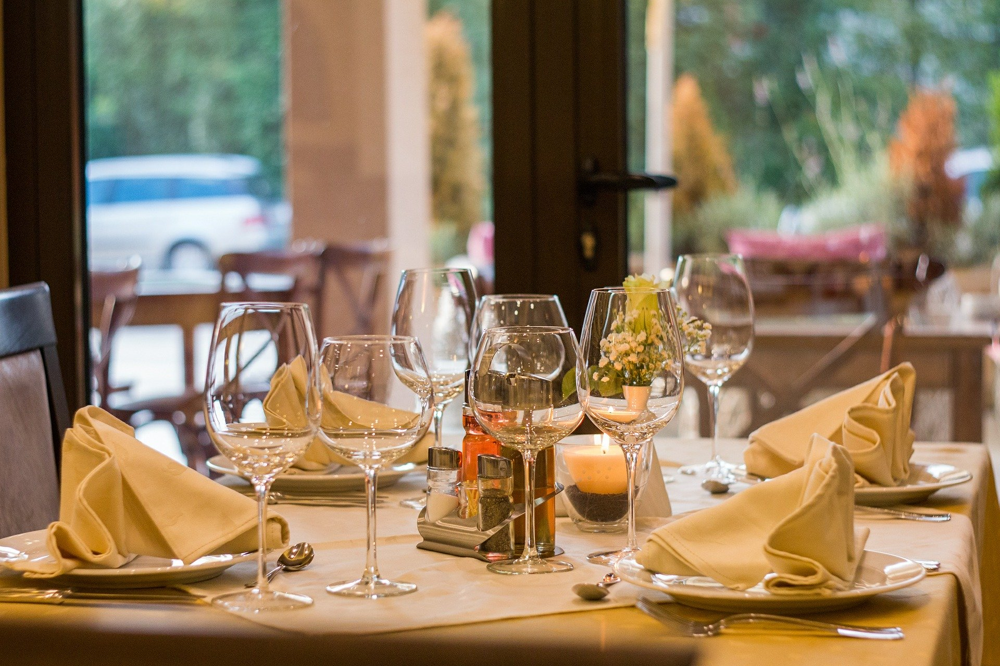

Dame de
Coeur
Notre histoire
C’est dans le cœur historique de Paris, sur l’île de la Cité, que se cache cette belle adresse traditionnelle. Jolies boiseries et banquettes douillettes y créent une ambiance chaleureuse, propice aux plaisirs épicuriens.
De génération en génération, les Duchatel entretient ce trésor familiale entre maintien des traditions et changements modernes, créant une ambiance unique où petits comme anciens se retrouvent pour profiter de la bonne cuisine française, signée Duchatel. En effet, si la Tradition occupe une place centrale, on ne cherche pas pour autant à y resservir les « saveurs du passé » mais l’on offre aux gourmands et aux gourmets les plaisirs éternels d’une cuisine simple et généreuse soumise au tamis de l’originalité de notre chef.

Plus qu'un héritage, un devoir
En mettant l'accent sur les ingrédients français, nous servons des plats aux saveurs véritables et de qualité. Tout est fait maison, et avec amour par notre chef, afin de faire chavirer vos papilles par l'authentique.
En cuisine, le chef remet au goût du jour des recettes d’hier, sans oublier d’être créatif et inspiré. Ici, la carte évolue au fil des saisons, révélant avec finesse et générosité les produits du terroir, d’une grande qualité. Vous entendez ? Fraîcheur et authenticité résonnent dans toute la maison. Le menu change quotidiennement et la carte évolue régulièrement aux grès des arrivages saisonniers et de l’inspiration du chef.
Ce qui ne varie pas, par contre, c’est le souci permanent de la qualité, de l’accueil et de ce petit rien d’élégance qui fait d’une belle assiette une promesse de bonheur gustatif.
Un espace intime
Une carte folle et aux multiples visages ? Oui, mais un service constant, attentif et prévenant. Par son coté rustique et intimiste, vous êtes à l'endroit parfait pour un moment de calme et de quiétude - non sans des papilles troublées par tant de merveilles.
En famille, en amis ou entre collègues, vous avez la possibilité de réserver une salle privée afin de fêter sans encombre les heureux événements de la vie ou congrès professionnels.
Tous les éléments sont donc réunis pour vous faire vivre un moment gustatif unique.
Et pour terminer ce programme, filez vous balader vers Notre-Dame.

Qu'attendez-vous pour profiter de ce merveilleux cadre, quel qu’en soit l'occasion ou l’événement ? Pas besoin d'excuse pour se faire plaisir et apprécier la qualité et le service professionnel que nous proposons. Dans un cadre chaleureux au cœur historique de Paris, venez déguster une cuisine nourrie des traditions des terroirs de France et saupoudrée d’étincelles en provenance d’horizons plus lointains.
Si vous souhaitez plus de renseignements ou réserver une table en notre sein, n'hésitez pas à nous contacter. Toutes les informations nécessaires sont plus bas, à votre disposition.